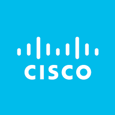
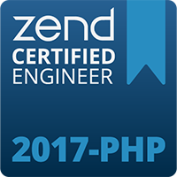
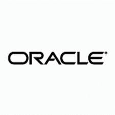

-

Certificación en C++.
Desarrollado por: C++ Institute, Cisco Networking Academy.Desarrollará la capacidad de leer y entender las definiciones de las funciones y clases de plantilla, y la capacidad de utilizar correctamente las clases y los métodos de plantilla, incluidas las plantillas de terceros.Aplique sus habilidades de programación mediante actividades prácticas en laboratorio y al escribir sus propios programas C++.
-

Certificación en PHP (Rogue Wave Zend).
El Ingeniero PHP certificado de Rogué Wave Zend es un estándar de toda la industria que reconoce la experiencia de PHP y es una medida de distinción que los empleadores utilizan para evaluar a posibles empleados. Únase a los miles de profesionales de PHP que han recibido certificaciones oficiales y sea reconocido por su experiencia en PHP. Tiene costo de $195.00 pesos
-

EFICIENCIA
98-381 “Introducción a la programación usando Python” es la clave y el nombre del nuevo examen ofrecido por Microsoft. ES para rofesionales de TI, Desarrolladores de software, Trabajadores de la información (information workers, etc. Podrá s:Realizar operaciones usando tipos de datos y operadores,controlar el flujo con decisiones y ciclos, realizar operaciones de entrada y salida, y documentar y estructurar código.
-

Certificación Java Oracle Asociado (OCA).
Esta es la certificación básica, que permite el acceso a los siguientes niveles de manejo del lenguaje.Te avala que eres experto en la Tecnología de Java y que tienes un dominio y conocimiento del Lenguaje de Programación capaz de resolver cualquier problema que se te presente. Costo de $145.00.